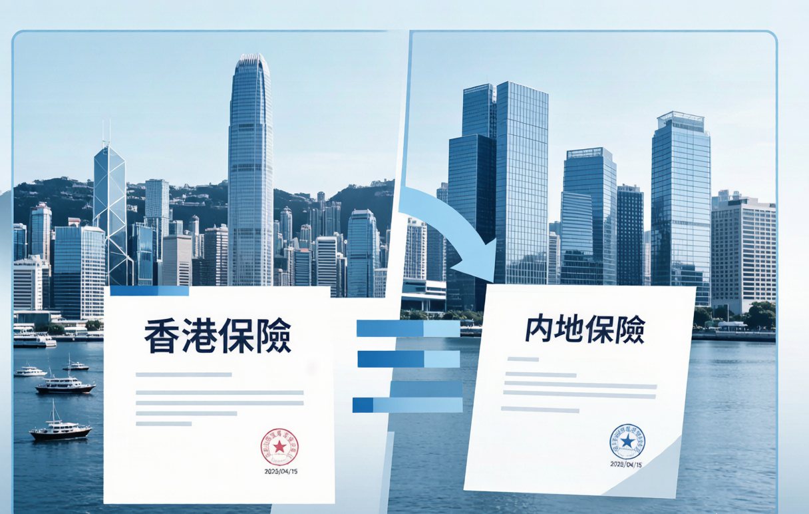
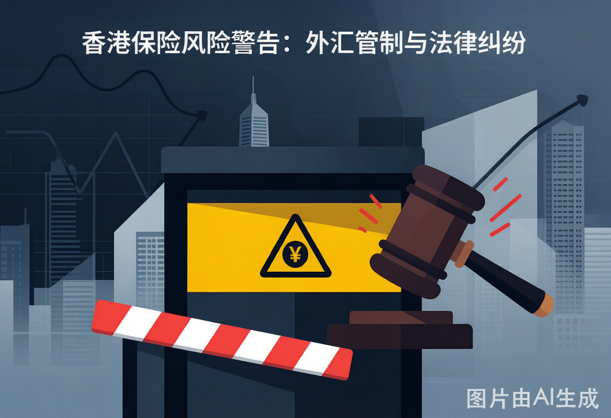

香港保险vs内地保险2025终极对比：6大优势和4个致命隐患，看完再决定飞不飞香港
2025年香港保险vs内地保险深度对比：港险6大优势、4个致命隐患、3个真实内地投保者经历复盘，附分红实现率数据和外汇管制2025新政影响分析。
**摘要：** 每年几十万内地人赴港买保险，港险的"低费率+高分红+全球理赔"确实诱人。但2025年外汇管制持续收紧，续费越来越难；香港法律环境对内地投保者并不友好；分红实现率也并非100%。本文用三个真实投保者的血泪经历，给你最客观的港险决策参考。
三个内地人买港险的真实经历：有人赚了，更多人后悔
案例一：张先生（48岁，外贸企业主）——买对了，但续费成噩梦
**背景：** 2019年，张先生赴港买了某头部保险公司的美元分红储蓄险，年缴保费**3万美元**（约21万人民币），缴费期10年。初衷是：①美元资产配置对冲人民币贬值；②预期复利5.5%，20年后翻倍；③香港法律对资产保护更好。
**前三年很顺利**（2019-2021）：每年用5万美元购汇额度中的3万，填写"旅游"用途把钱汇到香港账户，然后自动扣保费。
**2023年开始出问题：** 外汇局收紧审查，张先生某次购汇被银行要求提供"出境证明材料"。他无法证明3万美元全部用于旅游，被列入"关注名单"，购汇额度被限制。
**现在的困境：** 2025年还剩5年缴费期（共15万美元待缴），但正规购汇通道几乎走不通。他通过朋友在香港的公司"代付"过2次，但每次都要支付3%的手续费，而且时刻担心被查。
**张先生的反思：** "如果当初知道续费这么麻烦，我宁愿买内地增额终身寿。当时只看了预期收益，完全没考虑外汇管制的风险。现在退保损失超过已交保费的60%，只能硬着头皮续下去。"
案例二：王女士（35岁，互联网从业者）——港险理赔被拒，律师费40万
**背景：** 2021年王女士在港买了某公司的重疾险，保额**50万美元**（约350万人民币），年保费约4,200美元。2024年体检发现甲状腺结节，进一步检查确诊为"甲状腺微小乳头状癌"（直径0.6cm）。
**理赔过程：** 提交理赔申请后，香港保险公司以"甲状腺微小癌不属于保障范围内的恶性肿瘤"为由拒赔。王女士懵了——内地重疾险对甲状腺癌（即使是微小癌）通常都会理赔。
**她选择了打官司：**
- 聘请香港律师（每小时2,800港元）
- 案件审理近12个月
- 律师费累计约**38万港元**
- 最终法院判决：**维持保险公司拒赔决定**——因为合同中对"恶性肿瘤"的定义明确排除了"甲状腺微小乳头状癌"
**王女士的教训：** "我买的时候根本没仔细看疾病定义条款。内地保险的疾病定义是银保监会统一规范的，但港险每家公司自己定义，差别非常大。如果你不懂英文条款，等于蒙着眼签合同。现在我不仅没拿到赔款，还倒贴了40万律师费。"
案例三：陈先生（52岁，退休企业高管）——买港险10年，整体满意
**背景：** 2015年，陈先生在香港友邦买了一份美元储蓄分红险，趸交（一次性）**10万美元**。当时孩子准备去美国留学，这笔钱计划作为留学备用金+美元资产配置。
**10年后的结果是正面的：**
- 2025年账户现金价值约**18.2万美元**（年化复利约6.2%）
- 友邦该产品2015-2024年的平均分红实现率在**98%-105%**
- 期间没有任何缴费问题（趸交一次搞定，不需要续费）
- 孩子留学期间直接从中提取了8万美元支付学费
**陈先生的经验：** "趸交是关键——一次性搞定，不用每年为续费发愁。而且我在香港有账户、有境外资产，买港险是资产配置的一部分，不是全部押注。对于普通工薪族每年跨境续费，我觉得不太现实。"
港险6大优势：为什么还是有人前赴后继赴港投保

优势一：费率更低——同龄同保额便宜20%-30%
香港人均寿命全球领先（85岁+），精算死亡率低于内地，因此保障型产品的纯保费率更低：
| 产品 | 内地（30岁男/50万保额/20年交） | 香港（同条件） | 差异 |
|---|---|---|---|
| 终身重疾险 | ¥5,800/年 | ¥4,200/年（港元折算） | 港险便宜**28%** |
| 定期寿险（至70岁） | ¥1,200/年 | ¥800/年 | 港险便宜**33%** |
优势二：分红险预期收益更高，但注意"预期≠保证"
香港分红储蓄险的预期IRR演示通常为5%-6%（长期），而内地增额终身寿险的保证IRR已降至3.0%（2025年预定利率）。但这个差距是否真实存在，取决于分红实现率——后文有详细分析。
优势三：疾病定义更宽松（部分产品）
以重疾险中争议最大的"癌症"定义为例：
| 对比维度 | 香港（部分公司） | 内地（行业统一规范） |
|---|---|---|
| 癌症确诊即赔 | 部分产品接受早期癌症 | 通常要求恶性细胞已浸润或扩散 |
| 心脏病发作 | 心肌酶谱升高+胸痛即可 | 要求心电图+心肌酶谱双重证据 |
| 脑中风后遗症等待期 | 部分无等待期要求 | 确诊后需等待180天评定 |
**但注意：** 港险各公司定义不统一，有些港险产品的定义反而比内地更严——如案例二中"甲状腺微小癌"被排除。不能想当然认为港险一定更宽松。
优势四：全球理赔，适合有海外生活需求的人
港险的理赔范围为**全球**，包括在中国内地确诊后也可以理赔（只需翻译和公证）。对于经常出国、有移民计划、或子女将去海外留学/工作的家庭，全球理赔是实打实的优势。
优势五：美元/港元计价保单，合法持有境外资产
港险以美元或港元计价，对有海外资产配置需求的高净值人群，这是合法持有美元资产的方式之一——但前提是你有合法的境外资金来源来缴保费。
优势六：隐私保护更完善
香港《个人资料（隐私）条例》对保单信息有严格保护，内地法院无权直接调取香港保险公司的保单数据。这也是部分高净值人群看重港险的隐性原因。
港险4个致命隐患：比"买不了"更可怕的，是"买错了"
隐患一：外汇管制——续费通道越来越窄
这是当前买港险的最大风险。2025年外汇局进一步收紧了境外保险相关资金流动监管：
| 风险类型 | 具体表现 |
|---|---|
| 购汇被拒 | 银行购汇时如用途涉及"保险""保费"等关键词，系统直接拦截 |
| 分拆购汇追责 | 找多人分拆购汇（每人<5万美元）汇至同一境外账户，属于"变相逃汇" |
| 香港账户接收受监控 | 内地汇款频繁进入香港账户用于缴保费，可能被香港金管局问询 |
| 现金缴费限额 | 赴港现金缴费有单次限额（通常等值1万美元/次） |
**目前相对合规的续费路径：** ①在香港银行账户中有现有的合法境外资金（如境外工作收入、投资收益），直接扣款；②在港刷Visa/Mastercard信用卡缴首期（续期通常不接受）。
隐患二：法律管辖——在香港打官司，你处于绝对劣势
港险合同受香港法律管辖。如果发生理赔纠纷：
- 必须在**香港**提起诉讼（内地法院无权管辖）
- 香港律师费极高（2,000-5,000港元/小时起步）
- 香港法律对保险合同条款的解读倾向于**合同字面含义**，不一定有利于被保险人
- 诉讼周期长（通常12-24个月），且诉讼期间需自行承担所有费用
案例二的王女士就是典型——花40万打了两年官司，最后还是败诉。
隐患三：分红实现率并非100%——演示收益只是"画饼"
香港保监局要求保险公司披露分红实现率。以下是2020-2024年平均数据：
| 保险公司 | 美元分红险实际实现率 |
|---|---|
| AIA友邦 | 98%-105%（行业最优） |
| Prudential保诚 | 85%-95% |
| Manulife宏利 | 90%-100% |
| FTLife富通 | 80%-90% |
| 全行业均值 | 约90% |
**实际收益计算：** 如果产品演示IRR为6%，但实现率只有90%，你的实际IRR约为**5.4%**。如果实现率仅为80%（如某些表现不佳的产品），实际IRR约为**4.8%**——与内地增额终身寿的3.0%保证IRR相比，多赚约1.8个百分点，但这是**有风险的超额收益**。
隐患四：无限告知义务——说漏一句话，理赔可能被拒
港险的健康告知是**"无限告知"**——你知晓的与健康状况有关的所有信息，都必须主动向保险公司披露。内地的健康告知是**"询问告知"**——保险公司问什么你答什么。
这意味着：如果你在港险投保时漏说了一个5年前的体检异常（如"甲状腺回声不均"），未来因甲状腺癌理赔时，保险公司可能以"未如实告知"为由拒赔。
**实操提醒：** 投保港险前，把你过去5年的所有体检报告、门诊记录翻出来，逐条对照健康告知。宁可多告知，不要漏一条。
谁是港险的适合人群？谁绝对不该碰？

| 适合港险的人群 | 原因 |
|---|---|
| 高净值人群（可投资资产>1000万） | 已有境外合法资金，港险是资产配置一环 |
| 有移民/子女留学计划 | 未来生活重心在境外，港险全球理赔有意义 |
| 已有完备内地保障，港险做补充 | 分散风险，不把鸡蛋放一个篮子 |
| 趸交或有稳定境外收入 | 不受续费外汇管制困扰 |
| 绝对不该买港险的人群 | 原因 |
|---|---|
| 年收入<30万的普通工薪族 | 续费就是噩梦，且纠纷时请不起香港律师 |
| 不懂英文/粤语，跨境事务无经验 | 后续理赔服务将极其痛苦 |
| 只看"6%收益"，不懂"分红不保证" | 实际收益可能远低于预期 |
| 内地保险还没买够 | 先保障，后配置。港险不是必需品 |
常见问题 FAQ
**Q：内地人买香港保险合法吗？2025年还能不能买？**
A：**投保行为本身合法**——只要你本人亲自赴港签署合同，合同受香港法律保护。但**资金来源的合规性**才是最大的问题——如果你用境内人民币通过购汇通道缴保费，在2025年外汇管制政策下，合规难度极大。有境外合法收入（如境外工资、投资分红）的人不受此限制。购买前务必咨询专业跨境税务/法律顾问。
**Q：港险和内地保险可以同时买吗？理赔时冲突吗？**
A：**可以同时买，理赔不冲突。** 重疾险是给付型——确诊即赔，买几份赔几份。但总保额过高时，港险公司可能要求你披露其他地区已持有的保单。建议：先配足内地重疾险（50-100万保额），再用港险补充。不要把全部保障押注在港险上。
**Q：港险分红实现率低于100%意味着什么？我在哪里查？**
A：意味着你实际拿到的分红比产品说明书演示的少。在**香港保监局官网**（www.ia.org.hk）和各保险公司官网的"分红实现率"栏目可以查到过去5年的历史数据。如果某公司某类产品的实现率持续低于90%，你买的同类产品大概率也不会达到演示收益。查询分红实现率是买港险前必须做的一步。
**Q：港险理赔到底要不要去香港？流程是怎样的？**
A：**不需要亲自赴港。** 流程：①在内地医院获取诊断报告→②找认证翻译机构译成英文/繁体中文并公证→③邮寄至香港保险公司→④保险公司审核（通常2-4周）→⑤审核通过后，赔款汇至你指定的香港银行账户。整个过程约需要1-2个月（比内地慢很多）。如果发生纠纷，调解/仲裁/诉讼必须在香港进行。
*本文数据来源于香港保监局公开资料、各保险公司2020-2024年分红实现率披露数据、国家外汇管理局2025年相关政策文件。港险购买涉及跨境法律和外汇管理问题，请务必咨询专业顾问后决策。*
*外汇管制政策变化较快，购汇及跨境资金转移须严格遵守中国外汇管理相关法律法规。*